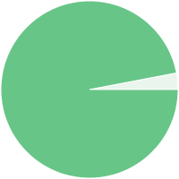
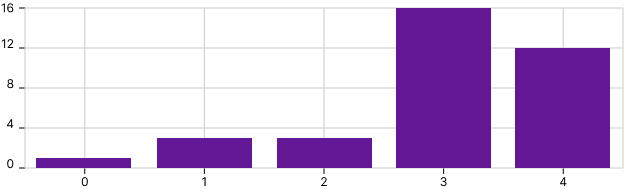
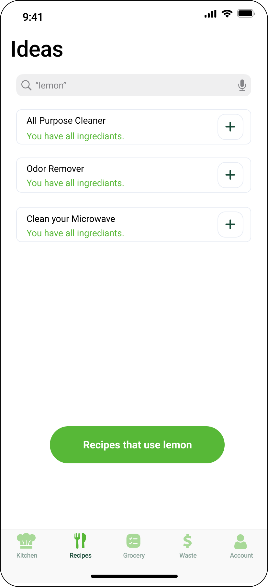

Research
First things first. Let's ask a few questions...

97.1%
Yes
No
35 survey responses from randomly selected peers.

We asked potential users how interested they were in reducing the amount of food they waste. This graphic shows the results with 45% responding Somewhat interested and 35% responding Very Interested
The average amount of money wasted on spoiled food was estimated at $10 a week. Some responses reached as high as $20-25 a week!
Analysis
After doing our research, we analyzed the data to gain insights.


Prototype
Using iOS Human Interface Guidelines we created high fidelity mockups.

Home Screen
- Easily visual the spaces in your kitchen.
- Immediate reprsentation of the "freshness" status of each space.
- Not satisfied with our space defaults? Create one yourself!

List of all the food in your kitchen
- Making dinner? Easily find all the food in your kitchen.
- Double check for food in your kitchen before making purchases at the grocery store.
- Easily check on the "freshness" status of each item in your kitchen.

Alternative ideas to throwing food in the garbage
- If a food item has expired, we will offer you creative solutions to use it.
- Some recipes like banana bread can still be made with overripe bananas.